Swipe or tap the right arrow to begin.
You can swipe back to previous slides, too.
Welcome to LoadStop
Download LoadStop Driver from the App Store (iPhone) or Google Play (Android) and follow along.
LoadStop gives you dispatch info and an easy way to submit paperwork. It also tracks you during a load and automatically (or manually) creates events we can use to determine in and out times.
If you’re a company driver and using a truck tablet it might be logged in to another driver. You can press the hamburger (3 lines) menu and tap Log Out to get to this screen.
First, let’s sign up! Chances are this is your first time using LoadStop.
Click the gray Sign Up button.

Sign Up
This is easy. Enter your first and last name followed by your cell number.
Your phone number has to be the one we have on file. And it must be able to accept text messages.

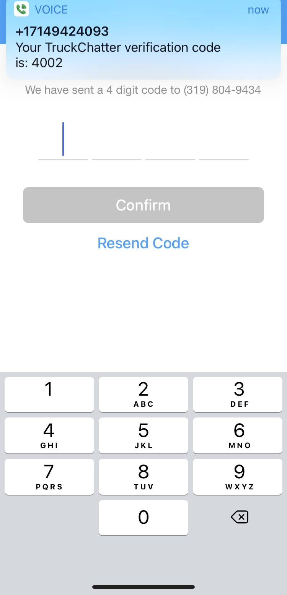
Verification Code
Once you press sign up, LoadStop will text you a verification code. If you’re fast you can type in the code from your notification banner. Otherwise, you’ll need to swap to your text message app and look for a text from TruckChatter.
Verification Code cont'd
This could change at any point. Good rule of thumb is the most recent text message you get with a code is probably the one you’ll want.
If that doesn’t work, click Resend code. Still nothing? Make sure we have your correct phone number on our end and that the number you just entered is the right one.
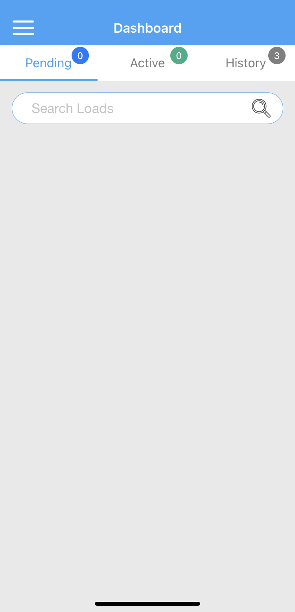
Dashboard
After you login you will be at the Dashboard. Pending are new loads that we’ve dispatched. Active is your current load. And history is all your previous loads.
It’s important to note that LoadStop Driver can only have one load active at a time.
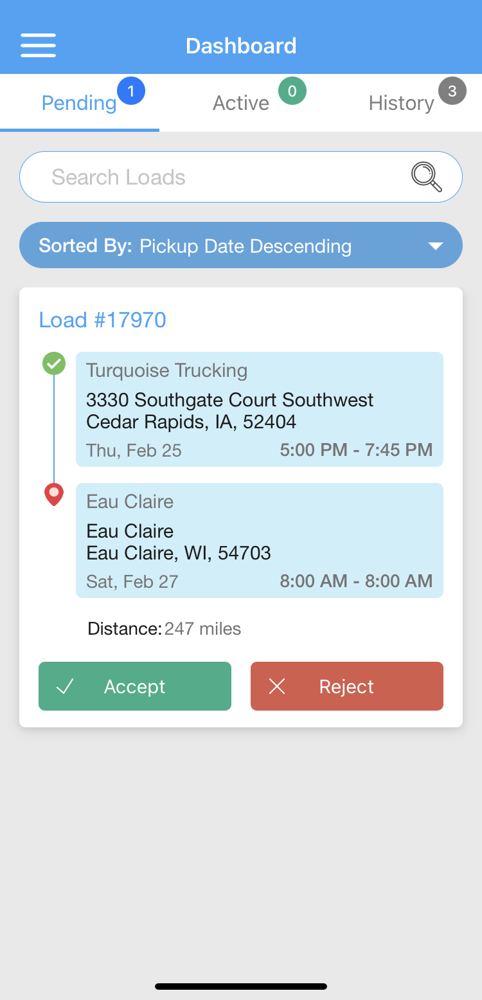
Pending load
During training we will dispatch a test load. You get a brief summary of the load, how many stops, appointments, and distance.
Accept a load
Once you tap Accept the load becomes your active load. Also, LoadStop Driver begins tracking your location.
Tap the load again to see the shipment details.

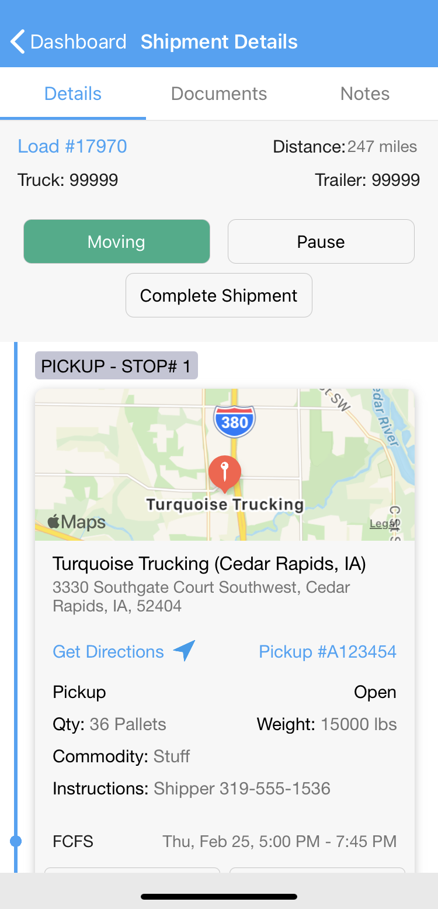
Shipment Details
Across the top you have details, documents, and notes.
Details is the main load area; with full load details and event buttons. Documents is all the paperwork that you take photos of. Notes are personal and just a spot to jot down information quickly.
Shipment Details cont'd
For test loads we will assign a dummy truck and trailer. During an actual load your current truck and trailer will be displayed. If these aren’t right, give us a call. You should always know what trailer your pulling for your logs as it is.
Three main buttons including moving (the default), pause, and complete shipment. Most important button is complete shipment but we won’t cover that till near the end.
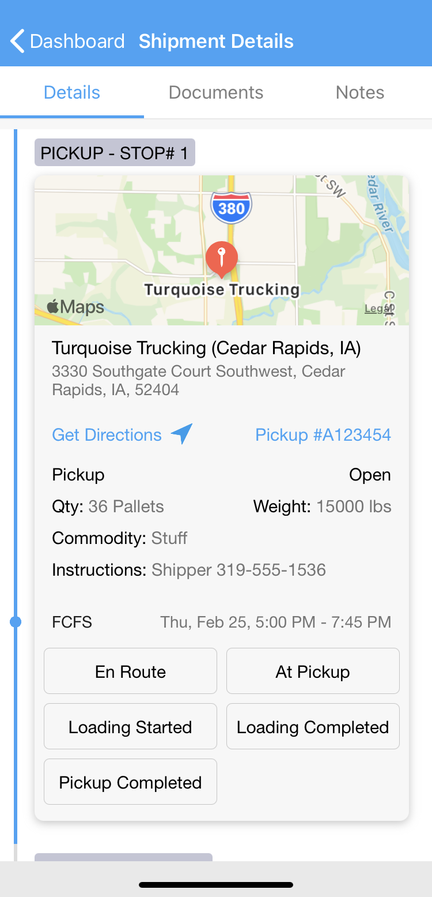
Stops
Notice the info for each stop. You get a brief visual of the stop and address. Pickup number, quantity, weight, and any instructions. Below are appointment times.
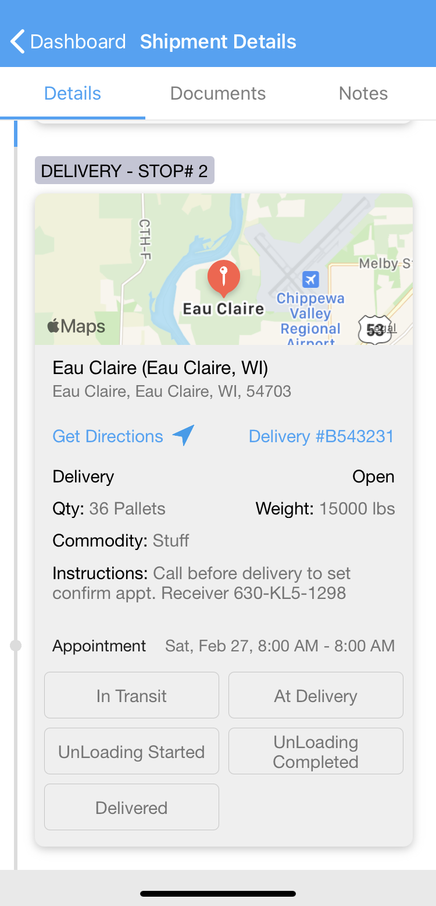
Stops cont'd
Each stop has their own buttons that we’ll go over in a bit.
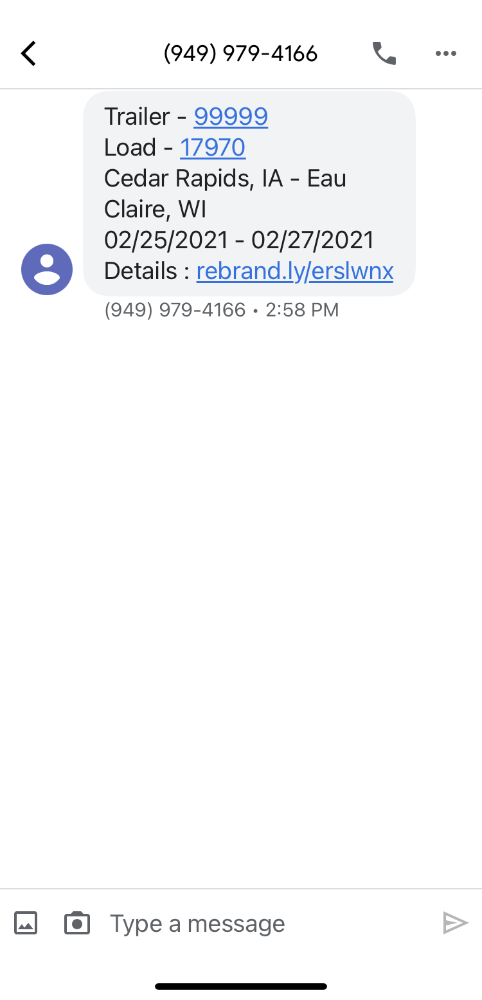
SMS Message
What happens if LoadStop Driver isn’t working or you run out of data? Dispatch information is also sent as a text message to your phone. It isn’t much but it could be just enough to get headed in the right direction.
If data isn’t a problem, the link at the bottom leads to a webpage that summarizes the load for you. It gives all the same information as the LoadStop app would.
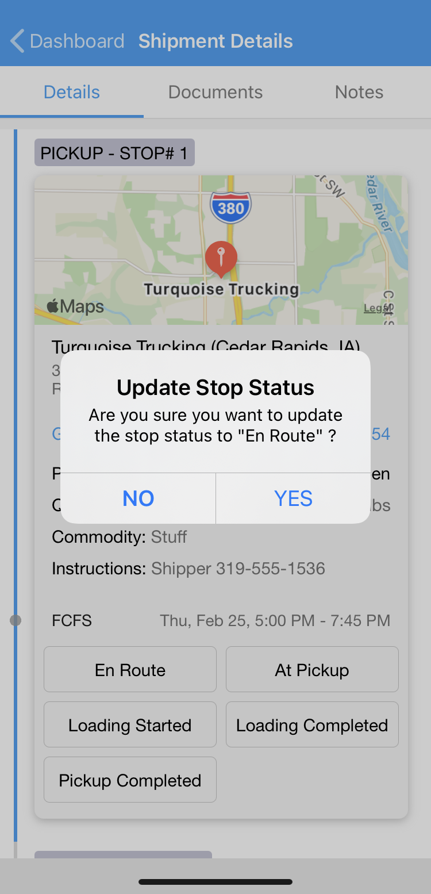
Event Buttons
Each stop has buttons with it. These are event buttons. Let’s say you’re about to start to your first stop and click en route. LoadStop Driver asks if you’re sure.
Tapping yes will send us an event with a timestamp. This is a great feature that will help with things like detention tracking. They are organized left to right, top to bottom. Tap when you’re at the pickup, when loading starts, etc.
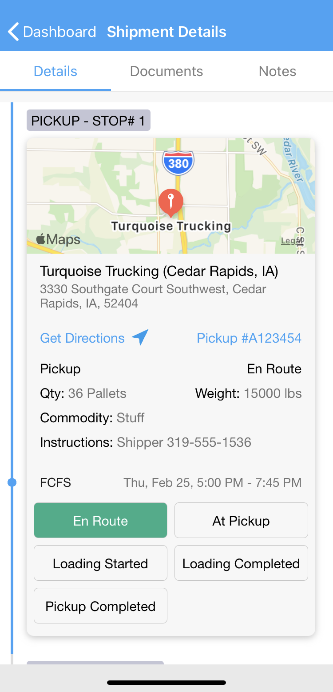
Event Buttons cont'd
But, It’s always a good idea to call your dispatcher with in and out times as well as get them on your paperwork.
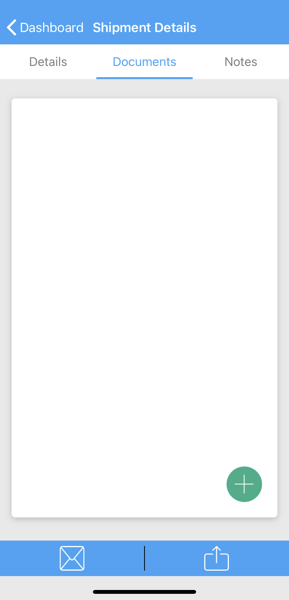
Add Paperwork
To add paperwork, tap Documents at the top. We only want signed BOLs from the receiver, we won’t need them from the shipper. For multi-drop loads just send the paperwork after the last stop.
Tap the plus in the green circle at the bottom.
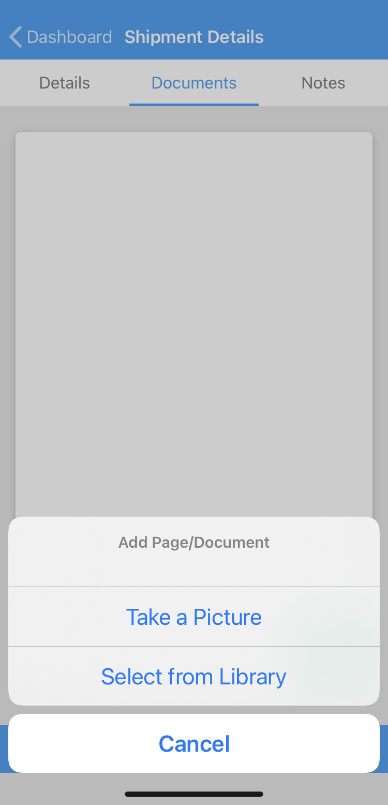
Add Paperwork cont'd
If you’d already took photos with another app like your built-in camera choose Select from Library. Otherwise, tap Take a Picture.
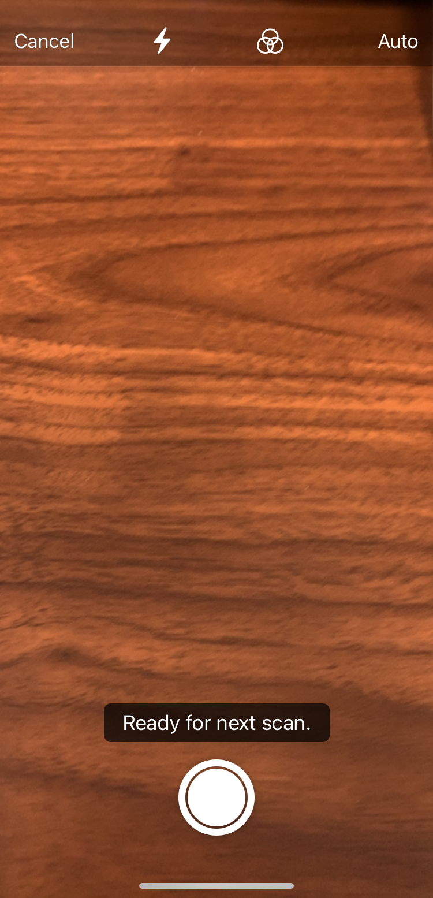
Take a Photo
The photo screen has a few options to change flash or color mode. When in doubt simply take a photo.
Photo Settings
There are a few settings that could help you take a better photo. Paperwork is money, it’s how you get paid. Without solid paperwork the load you just delivered doesn’t mean much to the broker a few weeks down the road.
The 3 circle button filters the photo. Clearest paperwork is Black & White but Grayscale works too.
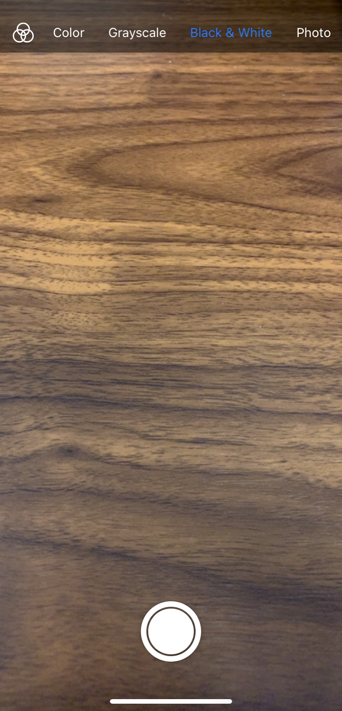
Photo Settings cont'd
The lightning bolt controls flash. In low lighting situations set this to On. Any strong contrasts (shadows) also affect the quality of a photo.
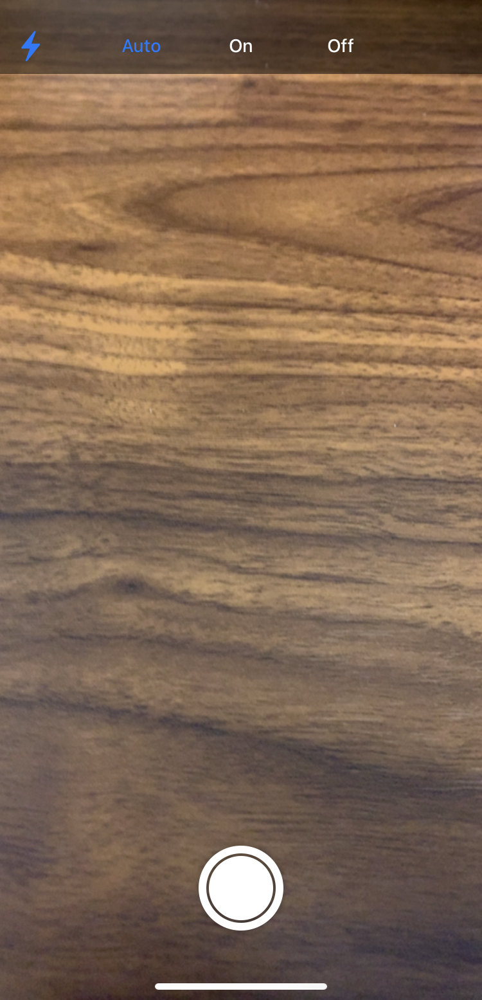
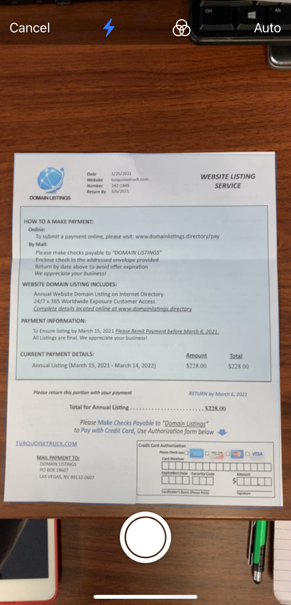
Photo Technique
For the best photos possible, use these techniques.
- Use a strong, overhead light or flash to reduce shadows
- Flatten the paperwork as best you can
Photo Technique cont'd
- Frame the shot so that you see the surface around the paperwork
- Tap the screen over the paperwork to focus it
- Lift the camera high, then tilt it back slightly and reposition. This tends to correct orientation problems where the paperwork is flipped the wrong way.
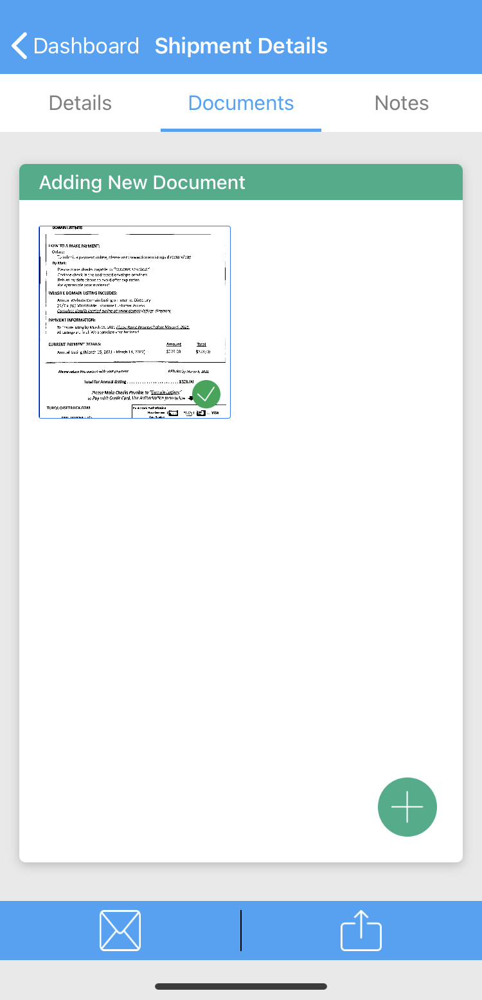
Add New Documents
To take multiple pages, take multiple photos. If the paperwork says page 1 of 5, make sure you’re sending us 5 pages.
Tap a photo to edit.
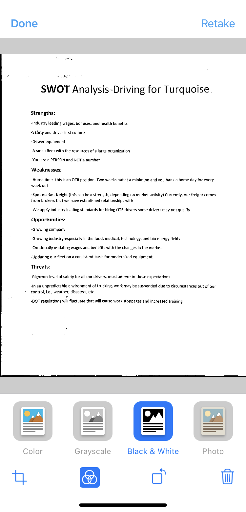
Edit a Photo
From left to right, the bottom buttons are crop, filter, rotate, and delete.
Cropping allows you to trim the edges of the photo.
Filter works the same as in-camera.
Rotate fixes any photos that ended up flipped or sideways.
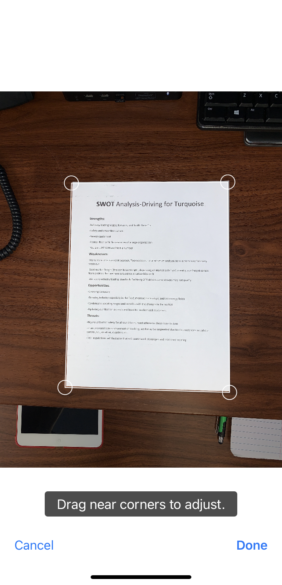
Adjust Corners
Drag the corners to get the whole page without the background.
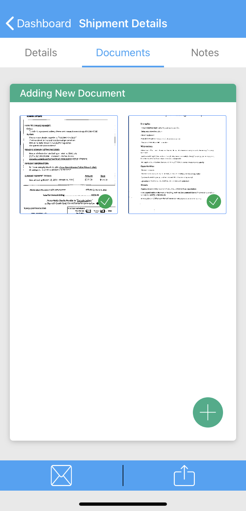
Send Documents
Now we have two documents. To send documents, tap the share button on the bottom right.
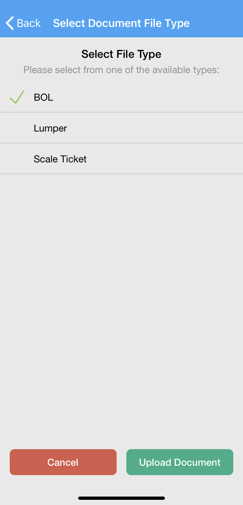
Select File Type
This is a BOL so tap that, then tap the green Upload Document button.
LoadStop only supports files related to a load; like BOLs, lumpers, and scale tickets. If you need to send something like an inspection or updated medical card we use other software for that.
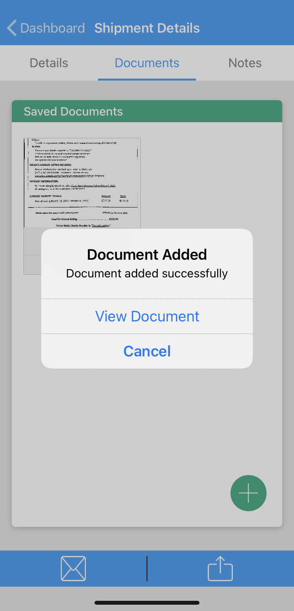
Document Added
This oddly worded prompt appears when you add a document. It should read View Document and Okay.
Tap Cancel and Details to go back.
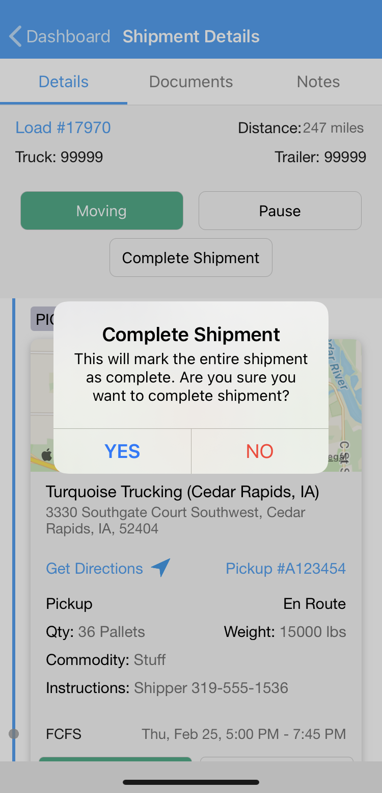
Complete Shipment
When you’ve been unloaded at your last stop and submitted paperwork it’s time to close out the load..
Tap Complete Shipment at the top of Details. A prompt will ask if you’re sure.
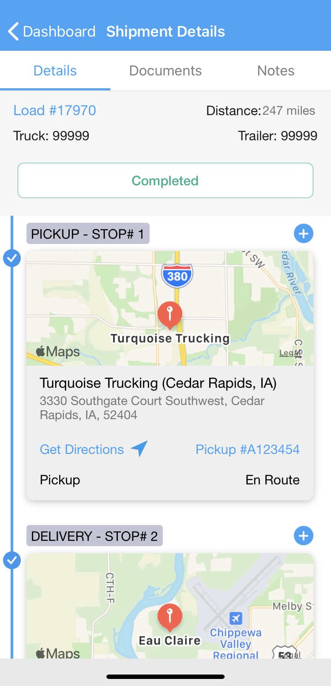
Complete Shipment cont'd
Once you complete a load it will be moved to your history tab in the Dashboard.
Wrap Up
That’s it. If you have any questions give us or LoadStop a call (832-648-4692).
Continue swiping for a brief Q & A.
Other Tracking Apps?
Q: What if a load has Macropoint or an in-house app like Convoy and I can only track one device?
A: When in doubt, always go with whatever the broker requires. Especially for cases like Macropoint or for loads from Convoy. If you fail to track with their apps there is usually a penalty we have to pay for.
LoadStop Sideways?
Q: LoadStop Driver isn’t sideways when I mount the tablet to the truck, why?
A: Sadly, the app doesn’t support changing orientation from portrait (vertical) to landscape (horizontal). We’ve put in requests for them to add this feature in the future.